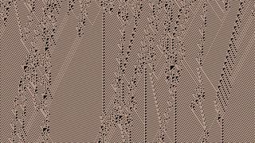
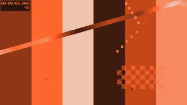
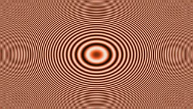
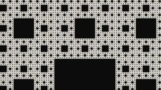
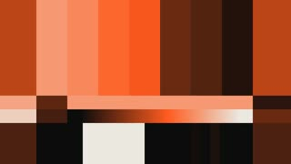
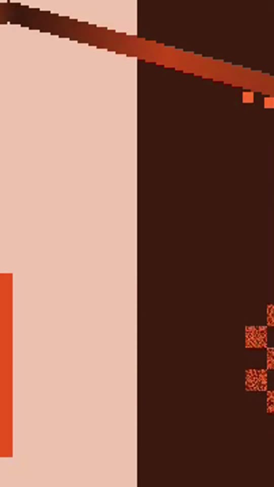
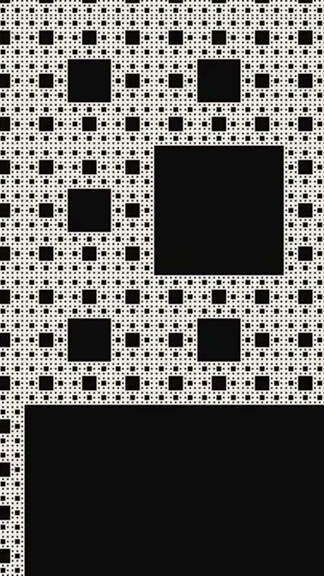

Your clips, cut on the beat.
Drop in clips and a song. beatcut finds the beat and cuts the video on it, on your Mac.
InstallRuns locally with Python and ffmpeg. Nothing is uploaded.
- mandelbrot.mp4
- life.mp4

cellauto.mp4- gradients.mp4

testsrc.mp4
zoneplate.mp4
sierpinski.mp4
bars.mp4

Track
sample-118.wav · 0:37.6quiet normal loud
Clips
Each clip is decoded at ten frames a second and scored for how much changes between frames. Every shot takes the liveliest stretch nobody has used yet. No stretch is used twice.

Cut
/ 00:30.00 cut 0 of 41Quiet intro: a cut every four beats.
The playhead is your scroll. beatcut snaps every cut to a beat and a frame boundary, and the shots arrive faster where the bars are loud.
Options
Every control re-plans the same sample from the same analysis. What you pick here is written into the command at the end.
That is the whole edit, in five choices. The command below has them.
Install
Needs Python 3.12 and ffmpeg. Everything runs on your machine.
- 1
brew install ffmpeg - 2
git clone https://github.com/madhavmongaa/beatcut && cd beatcut - 3
python3.12 -m venv .venv && source .venv/bin/activate && pip install -e .
Or open the editor in your browser: beatcut ui